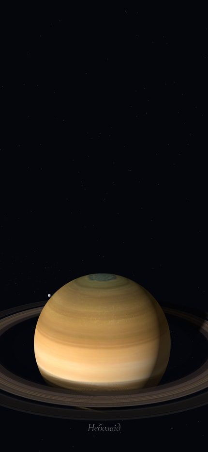
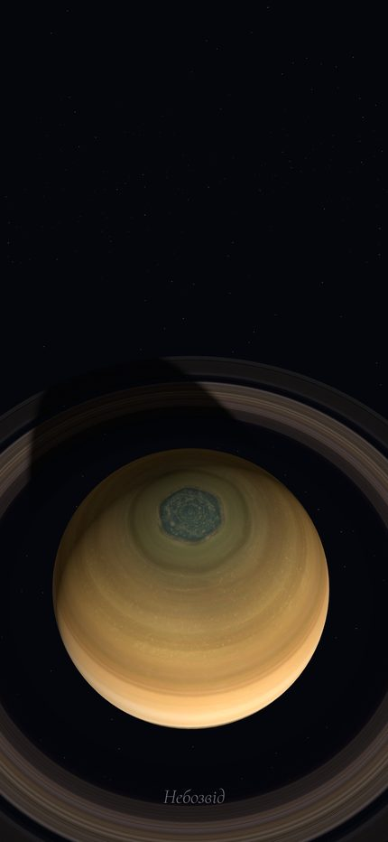
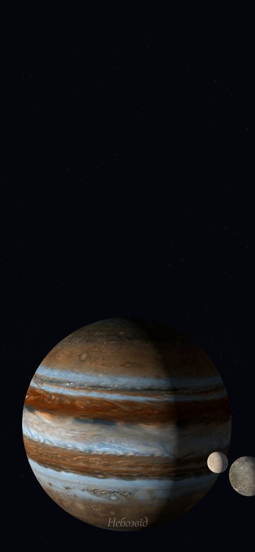
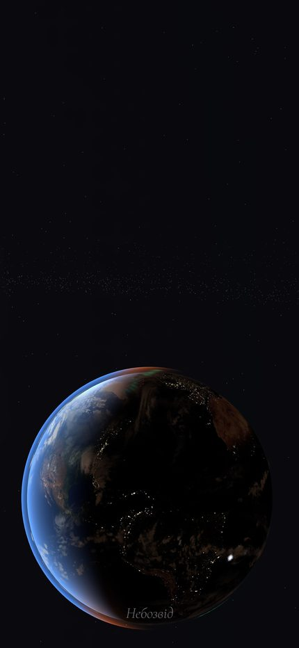
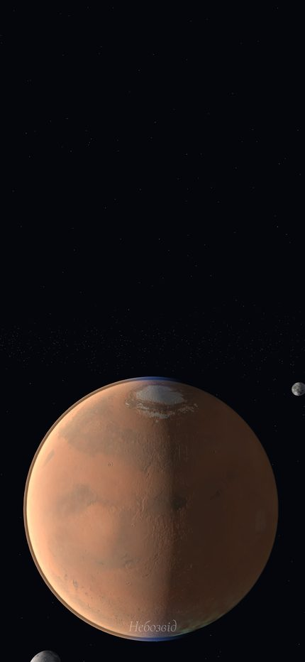
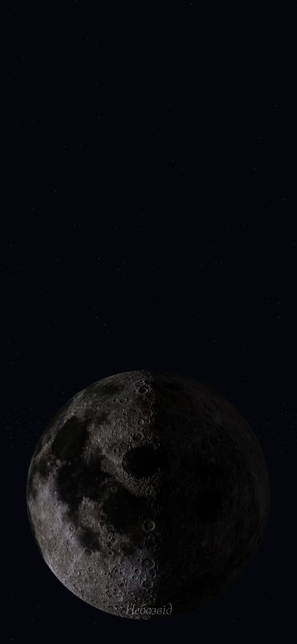
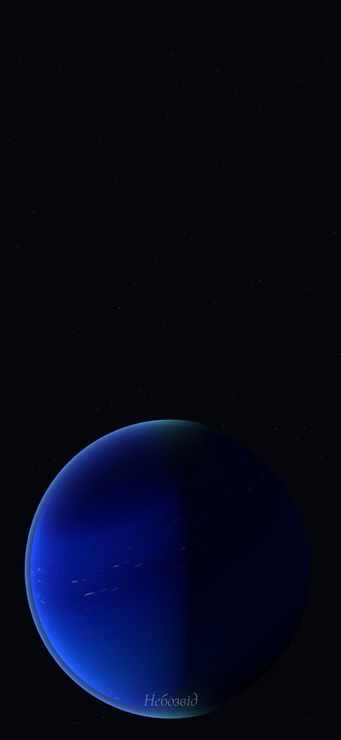

Дякую!
Ваш внесок наближає власний телескоп «Небозводу» 🔭 А це — невеликий подарунок: космічні шпалери для телефона з нашого 3D-планетарію.
Як зберегти на iPhone: натисніть «Завантажити» → торкніться й утримуйте картинку → «Зберегти в Фото». Потім: Фото → поділитися → «Використати як шпалери».
На Android: «Завантажити» → відкрийте файл → «Встановити як шпалери».
На Android: «Завантажити» → відкрийте файл → «Встановити як шпалери».














Шпалери зроблено на nebozvid.com.ua із відкритих карт поверхонь (NASA, ESA та ін., див. «Про проєкт»). Для особистого використання. Перший кадр із нашого телескопа теж буде тут ✦